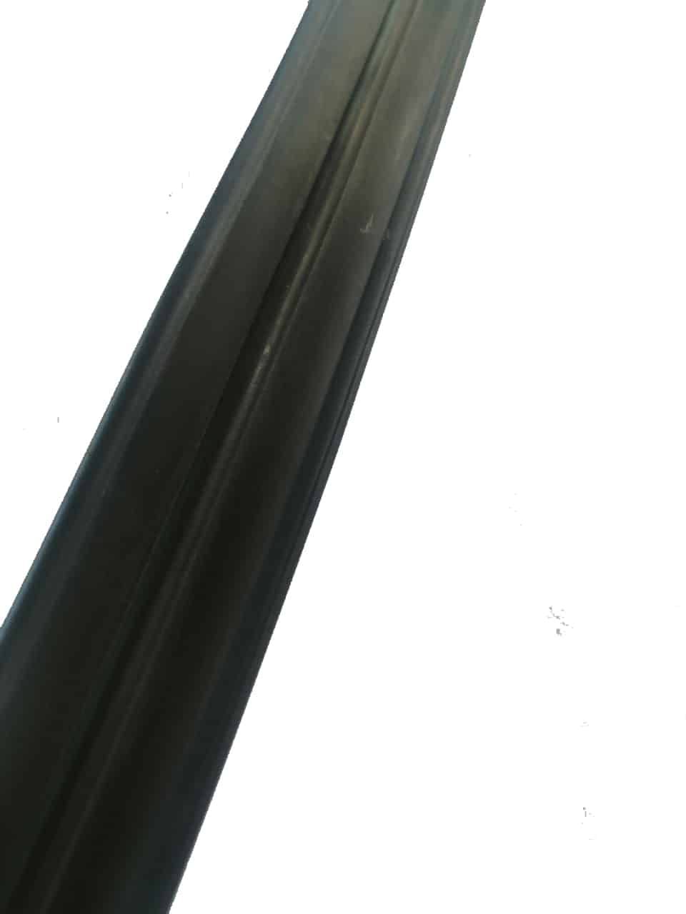
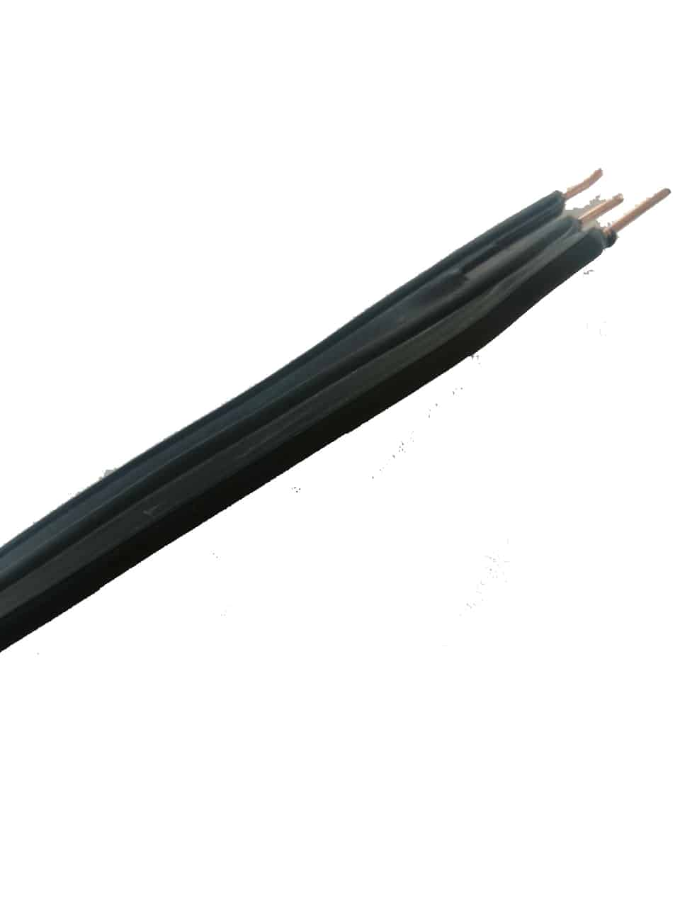
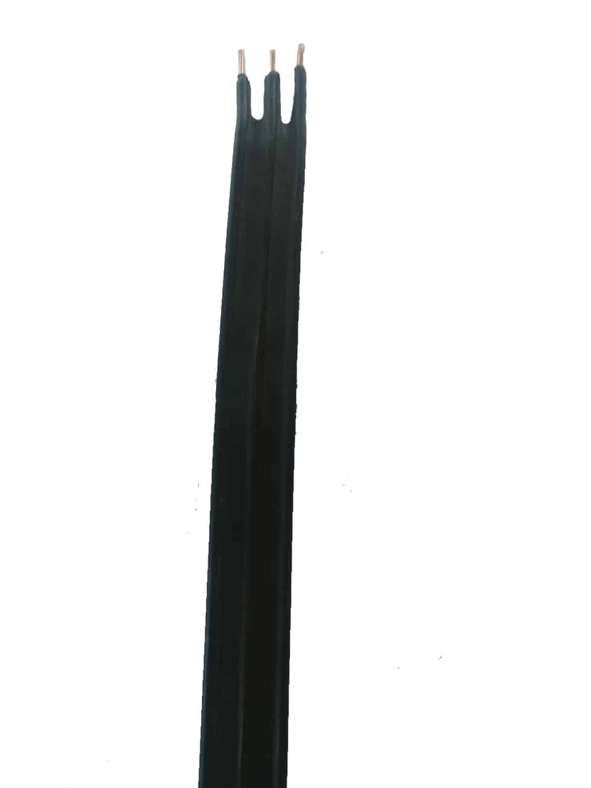

Группа компаний осуществляет свою деятельность в сфере строительства с 2009 года.
ООО "НОРДИКС" специализируется в проектировании и строительстве тепловых сетей и монтаже систем оперативного дистанционного контроля состояния изоляции тепловых сетей.
Также компания поставляет качественный и сертифицированный материал необходимый для монтажа ИТП и СОДК.
Неотъемлемой частью СОДК является кабель КСДК и его комплектующие.
КУТН-2

КУТН-4

КУТН-6

Пульт

Гермоввод

Ковер наземный

Кабель КСДК
Разработанный кабель для системы оперативного дистанционного контроля (СОДК) марки КСДК (импеданс 210-250 Ом), выполнен по строгим стандартам
на современном оборудовании. Применены передовые технологии и высококачественные материалы, которые позволяют кабелю
сохранять свои физико-химические свойства как при отрицательных, так и при повышенных температурах.
Благодаря применению качественных материалов сигнал не подвержен воздействию вшених факторов, это позволяет
снимать точные показания по локализации утечки в тепловых сетях (ТС). Кабель КСДК превосходит по показателям аналоги NYM и СОДК-П
в отрасли строительства тепловых сетей. Отличительной чертой кабеля для оперативного дистанционного контроля является
его плоская форма, кабель имеет 3 (три) жилы.


